Credit Risk Scoring Lab
A closed-loop MLOps platform for credit risk, not a notebook of models: eleven from-scratch statistical techniques for the scoring question itself, wired into fifteen more that detect drift, retrain, deploy, canary-test, cut over, monitor realized performance, and audit the whole system — honestly, including the state where retraining fired and nobody closed the loop yet.
This page shows the project's results. The methodology, the design decisions and the limitations are documented in the repository's README.
01 · Polyglot scorecard (R + Python + C)
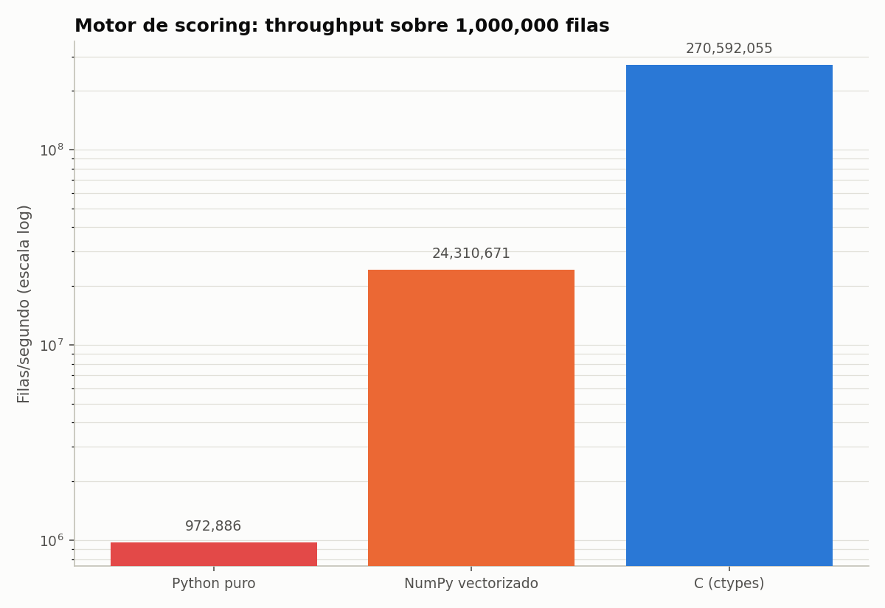
*Throughput over 1,000,000 rows, log scale. The compiled engine scores 270.6M
02 · Bidirectional R↔Python interop
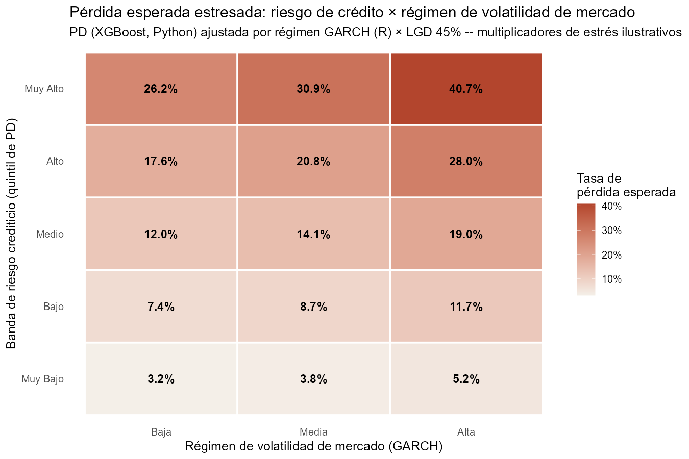
*The centrepiece: expected loss per credit-risk band stressed against three
03 · Lifetime PD from survival analysis
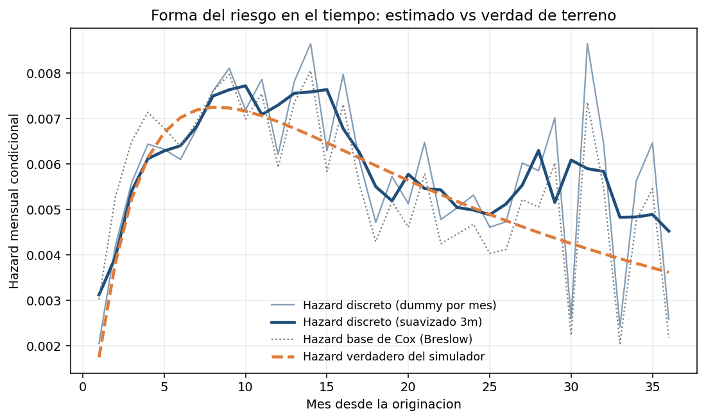
*The estimated hazard against the one the simulator actually used. The seasoning
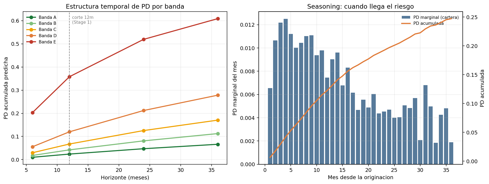
*Left: cumulative PD by horizon for each risk band, with the 12-month
04 · Bayesian hierarchical scorecard
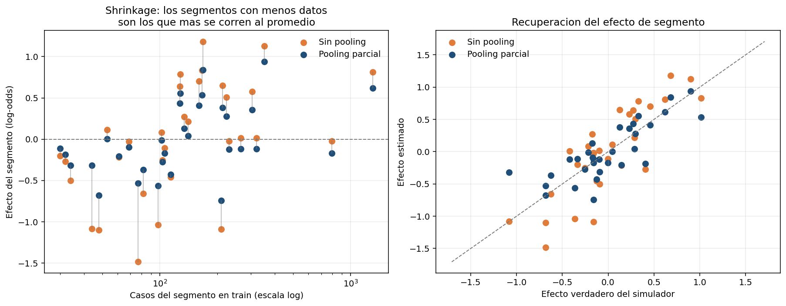
*Left: each segment's estimated effect with and without pooling, against how
05 · Monotonic constraints + conformal decisioning
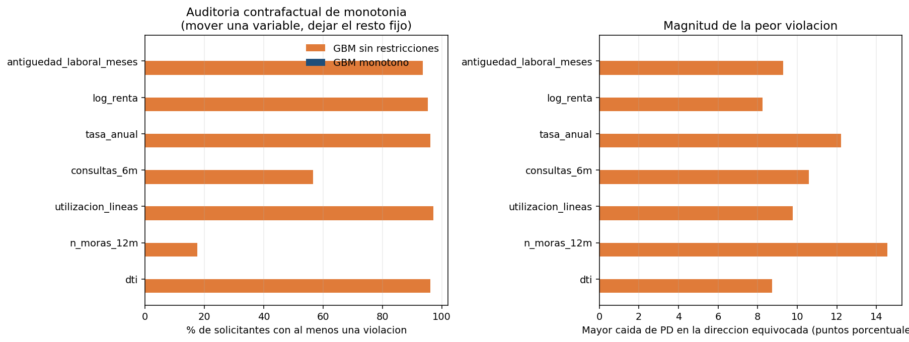
*The unconstrained model violates monotonicity for up to 97.6% of applicants on
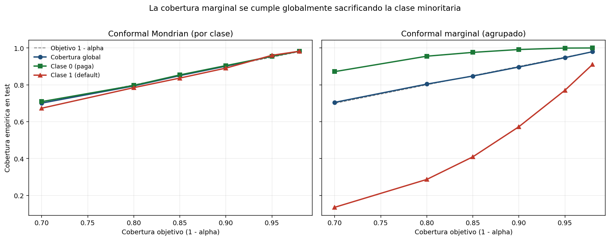
*Why the class-conditional (Mondrian) variant matters. Left: coverage tracks the
06 · Optimal-binning scorecard
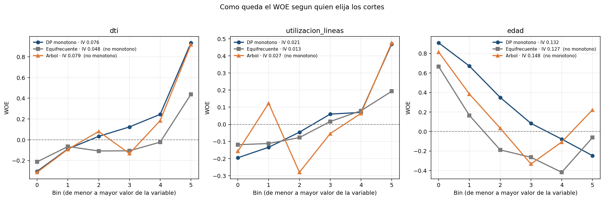
*The same three variables, cut three ways. The DP produces a clean monotone WOE
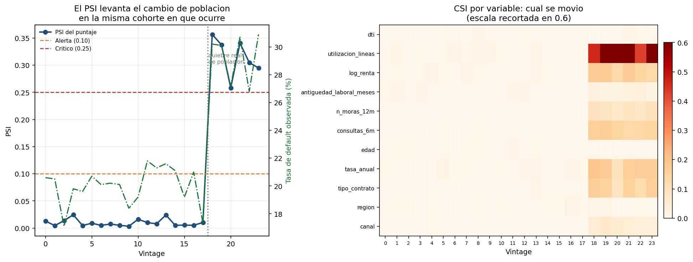
*Left: PSI stays under 0.025 for eighteen stable vintages — no false alarms —
07 · Fair lending bias audit
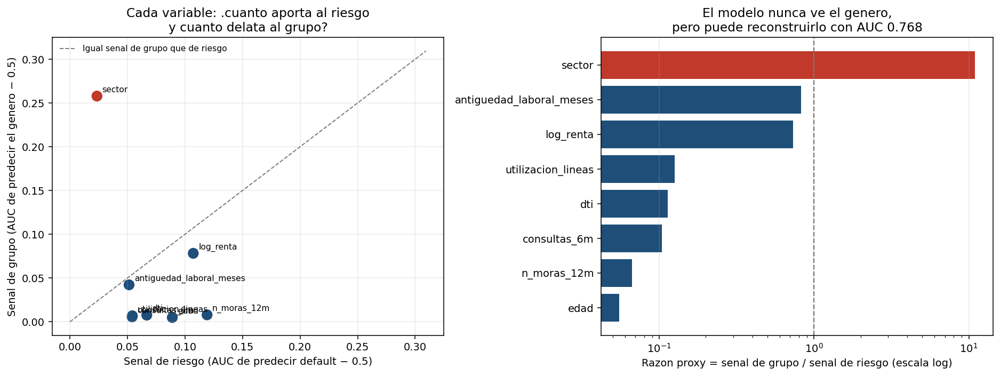
*Left: each feature's group signal against its risk signal. Everything sits
08 · Differentially private scoring
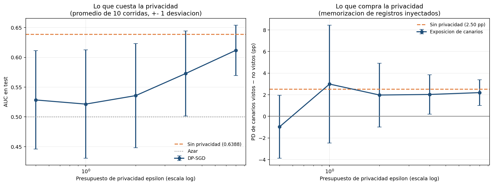
*Left: what privacy costs — AUC against ε, averaged over ten independent runs
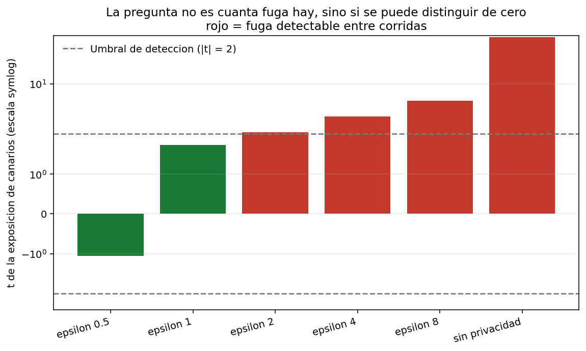
*The same data asked properly: not "how much leakage" but "can it be told apart
09 · Reject inference & selection bias
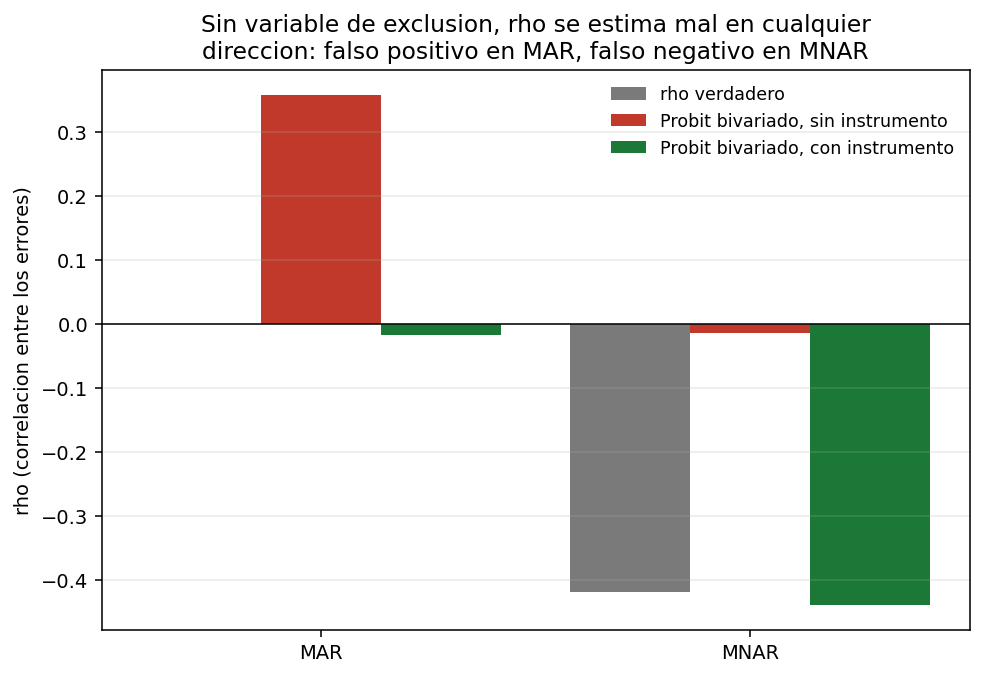
*Grey is the truth. Without an exclusion restriction (red) the model invents
10 · Through-the-cycle vs. point-in-time PD
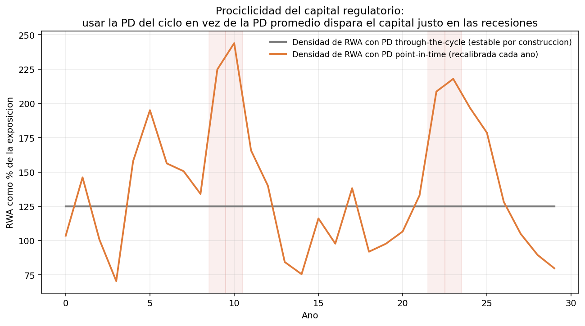
*Grey: RWA density using the through-the-cycle PD — flat by construction.
11 · Federated credit scoring
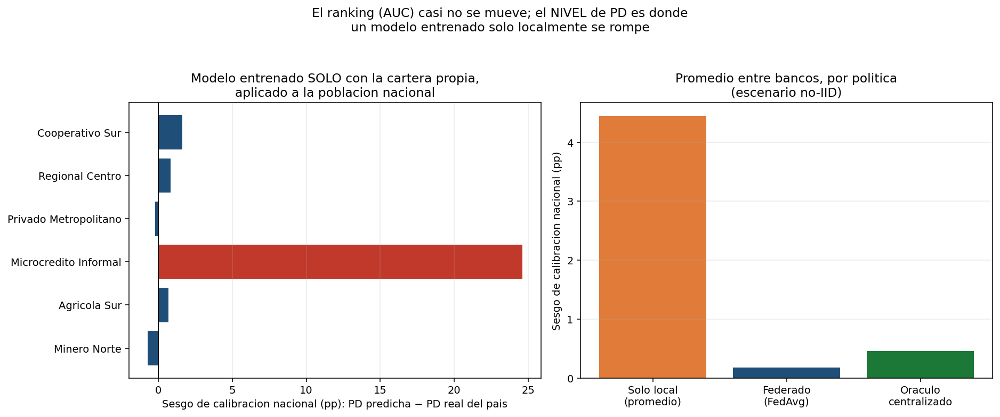
*Left: each bank's own model, trained only on its own customers, applied to